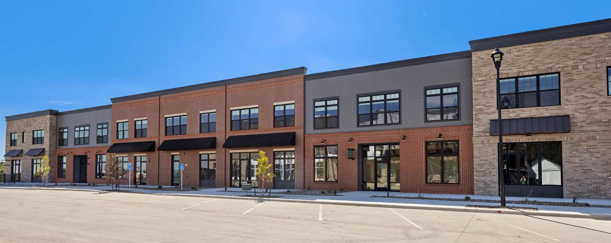

The Lofts
Shops downstairs, apartments upstairs
The first building on Main Street has rental apartments on the upper floors and a row of storefronts at the sidewalk. Pick out something special at The Farmstand, book a cut and color at Reese Marie, and finish with ice cream at Cups & Cones.
Live in the Lofts